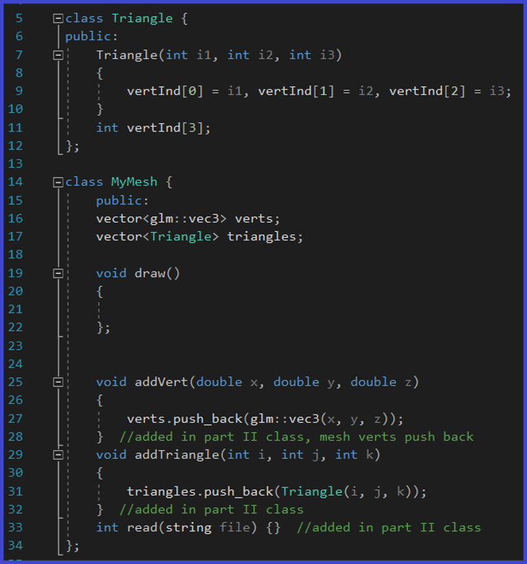
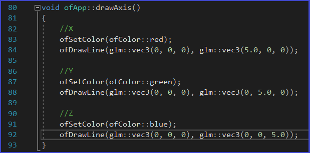
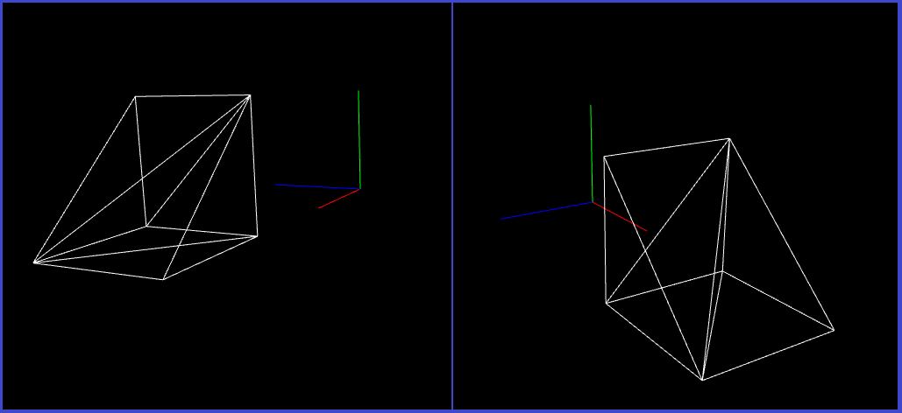
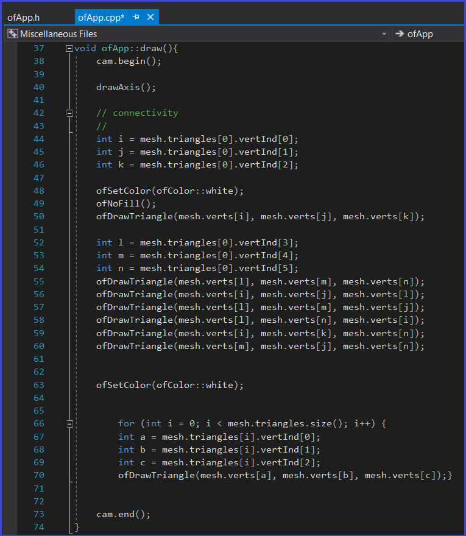
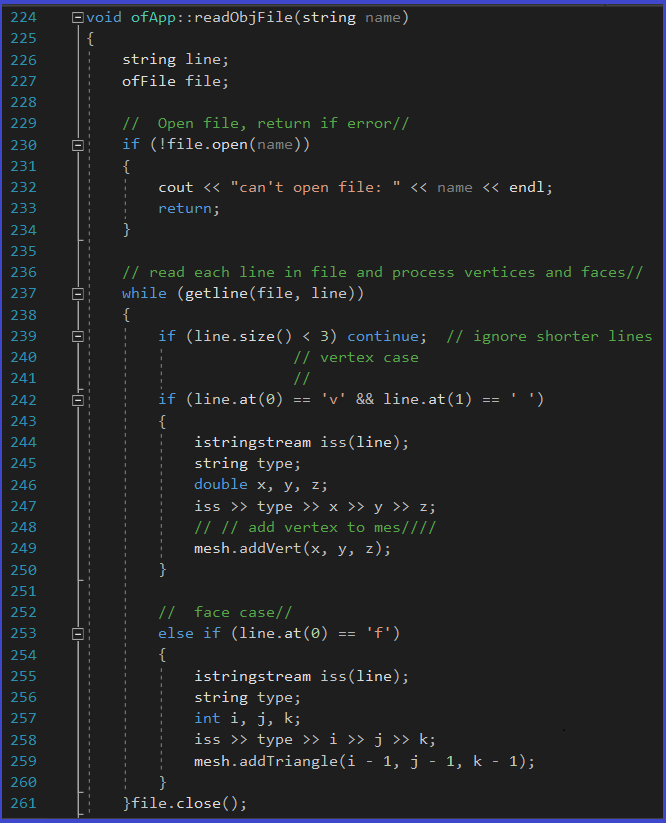
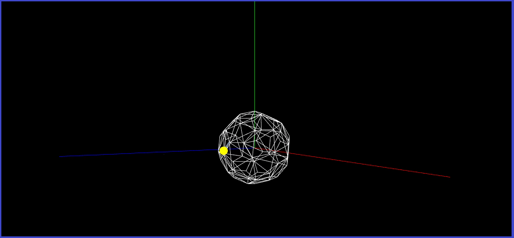

Mesh Projects
For this project, I created an indexed triangle vertex method, and a method called Mesh. There are two storage elements in the Mesh class: the list of vertices in the mesh, and a list of indices to the triangle vertices. The Mesh supports any number of vertices and faces (triangles).
To look at the definition of a Mesh in Computer Graphics, please go here:
To help with the visualization of my meshes, I made a drawAxis() method, which draws a red line on the x plane, a green line on the y plane, and blue line on the z plane:
There were two parts for this Mesh project. For the first part, I created a geometric figure, a ramp, that will serve as a test to use the Mesh class. This part of the project was hard-coded and is merely to test the Mesh class. The result was a ramp, formed by 8 triangles or faces, with 6 vertices:
I created a draw() class to draw the mesh in the wireframe. This method iterates through all the triangles I created to draw each triangle.
For the second part of the project, I created a readObjFile() method, which reads a .obj file. For more information on .obj files, please go here:
These .obj files contain the list of geometric vertices, number of faces, and other geometric information. The readObjFile() will read that data, and print the total number of vertices, number of faces, and the total size of the Mesh structure. Here is that method:

For this project, I decided to read an .obj file contain a soccer ball that is made out of meshes. The end result of the project is seen on the top video as shown above.